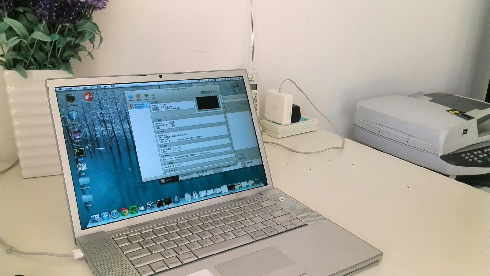

大年初二去了宜家，以为没多少人，竟然依旧熙熙攘攘。而且原计划逛一个下午，结果整整在里面转了八个小时。最有意思的是出来后几乎什么都没买。－ 没买的原因是家里没地方放多余的家居或家居，或者是觉得摆放不那么必须的东西而损失居室空间并不值得。
逛宜家的一个感觉是设计很重要，功能变得次要了，看看那些体现在细微之处的小改进很有意思。如果有闲暇时间的话，我在想自己可以去选修个设计课。给人带来满足感的工作有一项是创造，设计也是创造的一种，而且是在人们解决温饱问题后更愿意买单的一种创造。@Ada李力:大年初二去了宜家，以为没多少人，竟然依旧熙熙攘攘。而且原计划逛一个下午，结果整整在里面转了八个小时。最有意思的是出来后几乎什么都没买。－ 没买的原因是家里没地方放多余的家居或家居，或者是觉得摆放不那么必须的东西而损失居室空间并不值得。
回复@黄小非:空间要是挤挤，总还是能挤出来的。水平空间不够，还可以向垂直空间发展。看到实物时，脑海中想像下未来的空间，刚觉不好就不买了。 //@黄小非:但是在去之前就应该知道家里没地方摆了吧@Ada李力:大年初二去了宜家，以为没多少人，竟然依旧熙熙攘攘。而且原计划逛一个下午，结果整整在里面转了八个小时。最有意思的是出来后几乎什么都没买。－ 没买的原因是家里没地方放多余的家居或家居，或者是觉得摆放不那么必须的东西而损失居室空间并不值得。
在客厅一角给自己弄了个书桌。明俊开始反对，说没有见过别人家在客厅放那么大桌子的，我倒是觉得这么个靠阳台的黄金地方，只放盆植物，人不常在附近活动，太浪费了。客厅又不是让外人观赏的，自己感觉好最重要。明俊说他感觉不好。 
为给姣姣做独立房间，我要在客厅给自己挪出个书桌的地方放，把原来的小书房腾出来，再把明俊的电脑和书桌从姣姣房间挪到小书房里。明俊和姣姣都不情愿，于是咱就一个人干了。边干边想，怪不得改革的阻力大，就我家挪个书桌出来这点儿破事儿，就家里一大半的人反对。